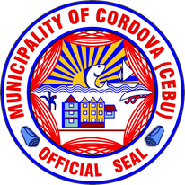

Cordova Map

A 3RD-CLASS MUNICIPALITY BELONGING TO THE 6TH DISTRICT OF THE PROVINCE OF CEBU
Also spelled Cordoba, most of the municipality lies on separate islands off the southern coast of Mactan Island.
It is connected by two bridges to the main island of Mactan, which itself is connected to mainland Cebu by the two bridges between Mandaue and Lapu-Lapu City.
The Cebu-Cordova Link Expressway, opened in 2022, connects it directly to mainland Cebu in Cebu City.
Cordova is bordered to the north by Lapu-Lapu City, to the west by the Mactan Channel, to the east by the Hilutangan Channel and Olango Island, and to the south by the Cebu Strait.
Cordova is a part of Metro Cebu.